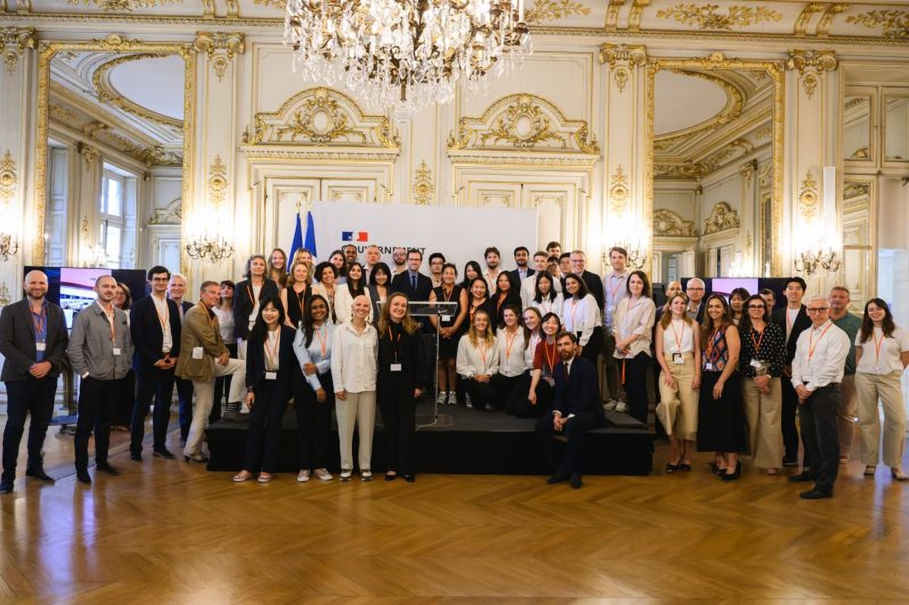

June 2026
Final Jury at the Hôtel de Roquelaure
The Class of 2026 closed its year at the Hôtel de Roquelaure, home of the French Ministry for Ecological Transition. Minister Mathieu Lefèvre welcomed about 30 students from 12 nationalities. Six consulting projects, developed over the year with L’Oréal, SNCF Réseau, Equans and AP-HP, were presented to the jury. Three laureate groups were recognised for their work with L’Oréal, SNCF and Equans.
The Chair thanked its partners, coaches and mentors, and the leadership of Pierre-Emmanuel Saint-Esprit, Justine Laurent and Felix Papier.